A security startup within Google Workspace.
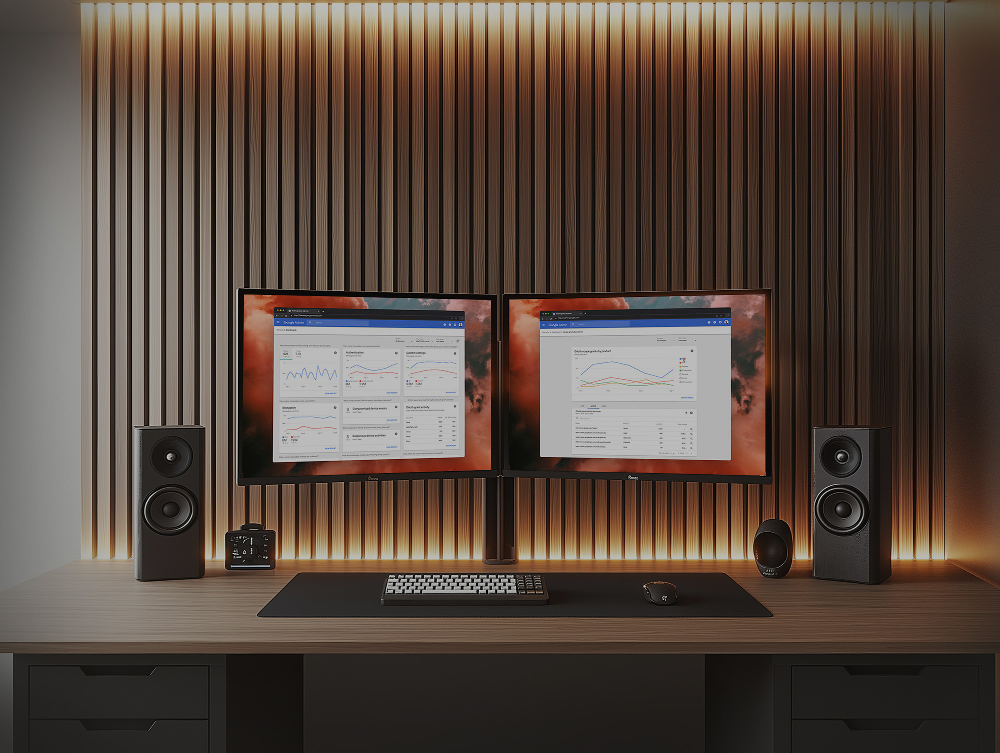
The Challenge
The initial idea for this product was to externalize a couple of APIs that allowed us to see and act on Gmail data. We thought it would be valuable for organizations to have access to this data in order to understand information and trends that might affect their organization's security. This seems like a simple idea, but for me and my team it was a huge learning experience. We didn't know anything about the people that would actually use such a product and we knew very little about data visualization. We had to work quickly to learn about both while trying to launch the MVP.
Little did we know that externalizing a couple of APIs would turn into a suite of security products for Workspace that would populate a brand new Enterprise SKU, expanding Workspace's business considerably.
Project Impact
Tons of value
Security Center was a key value driver for an entirely new premium subscription tier for Google Workspace (Enterprise SKU) with several large company contracts citing Security Center — especially the investigation tool — as the reason for signing.
Scalable UI
The initial UIs we created were done in a very general way so that more data sources and objects could be added using the same UI framework. For example, the junction table I introduced for the drive sharing relationship audit experience scaled to show relationships for all kinds of data.
Made for exponential growth
The dashboards and the investigation tool became exponentially more valuable as new security products were added to the Workspace portfolio — alert centers, query tools, and dashboards all linking together into a connected security ecosystem.
Our research became the backbone of all of our product work. We studied:
- Dashboards. We tested our MVP dashboard and learned a lot about how admins reasoned about the data we were showing them.
- Future concepts. We tested a range of future concepts to inform our roadmap — think command-line interface vs. AI assistant. We got great signal about future direction, creating a version of Maslow's hierarchy of needs for security admins.
- Security settings health. We learned about how admins configure their domain settings to secure their organization's data. Our hypothesis of a helpful security score was actually disproven in this study.
- Security investigation. We learned about admins' current process for conducting security investigations and that helped us understand how we might help them through organic search and the ability to take actions.
- Admin collaboration. We learned that admins actually work in teams. For security reasons, there's usually a separation of duties when it comes to analyzing versus acting. Permissions and collaboration are important.
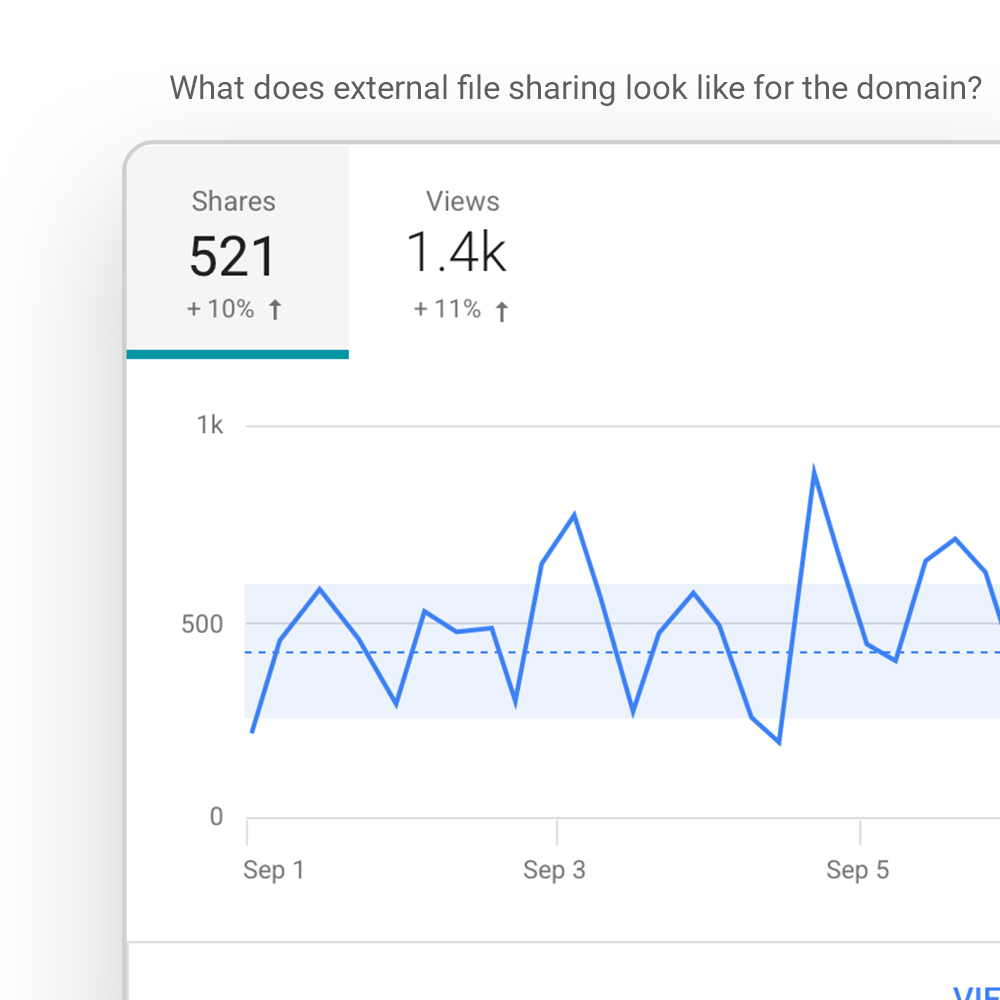
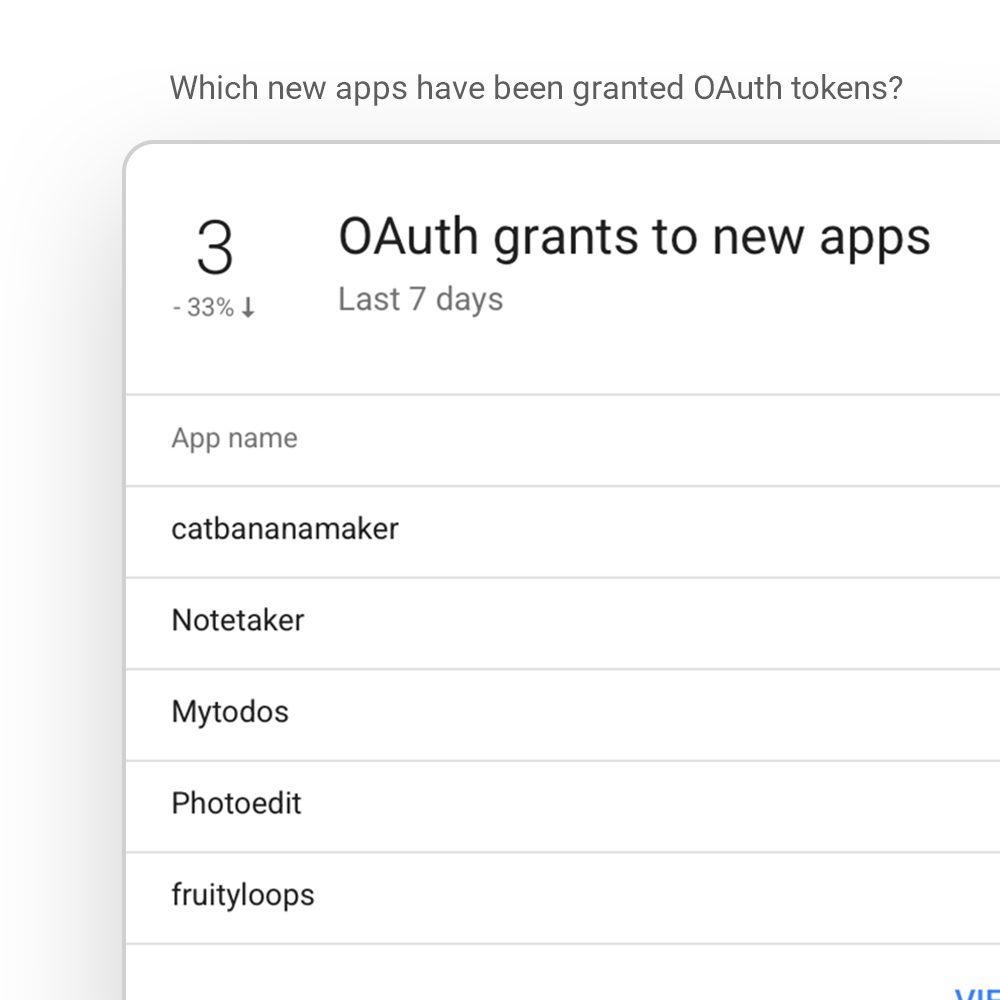
Charts + drilldown tables
I learned more about data visualization working on this project than ever before. It started with visualizing some canned queries as an MVP and grew into a flexible dashboard framework where the dashboard could be customized based on the queries most important to each user.
The dashboard consisted of a main page housing chart widgets. From each widget you could click into a details page to analyze the data further using a set of filters. On the detail pages you can click on a point in time to filter by date — this refreshes the corresponding table showing individual line items filtered by whatever fields are available.
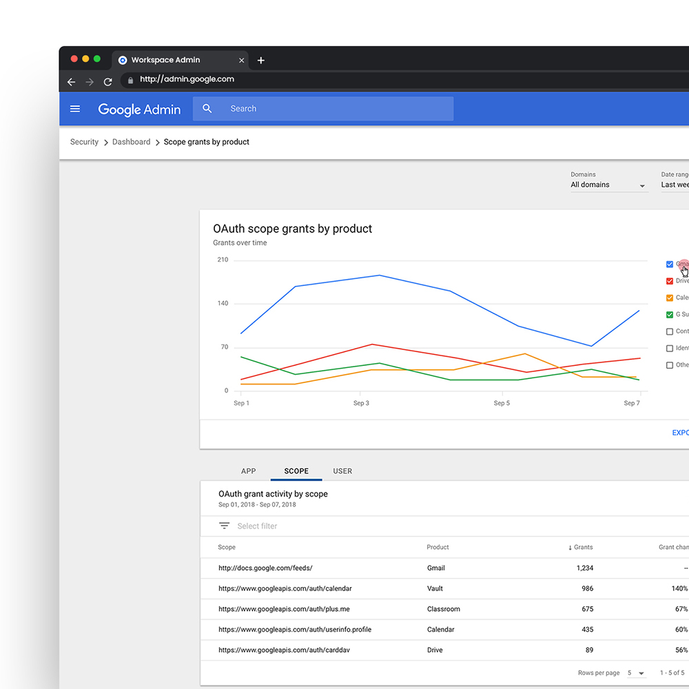
Research Insight
Many users needed help understanding what their data was telling them.
Design Approach
Labeled each chart widget with natural language questions that each featured query was designed to answer. Added a help tip to every dashboard widget with a detailed explanation of how to better understand the data in the chart. Used line graphs to show changes over time.
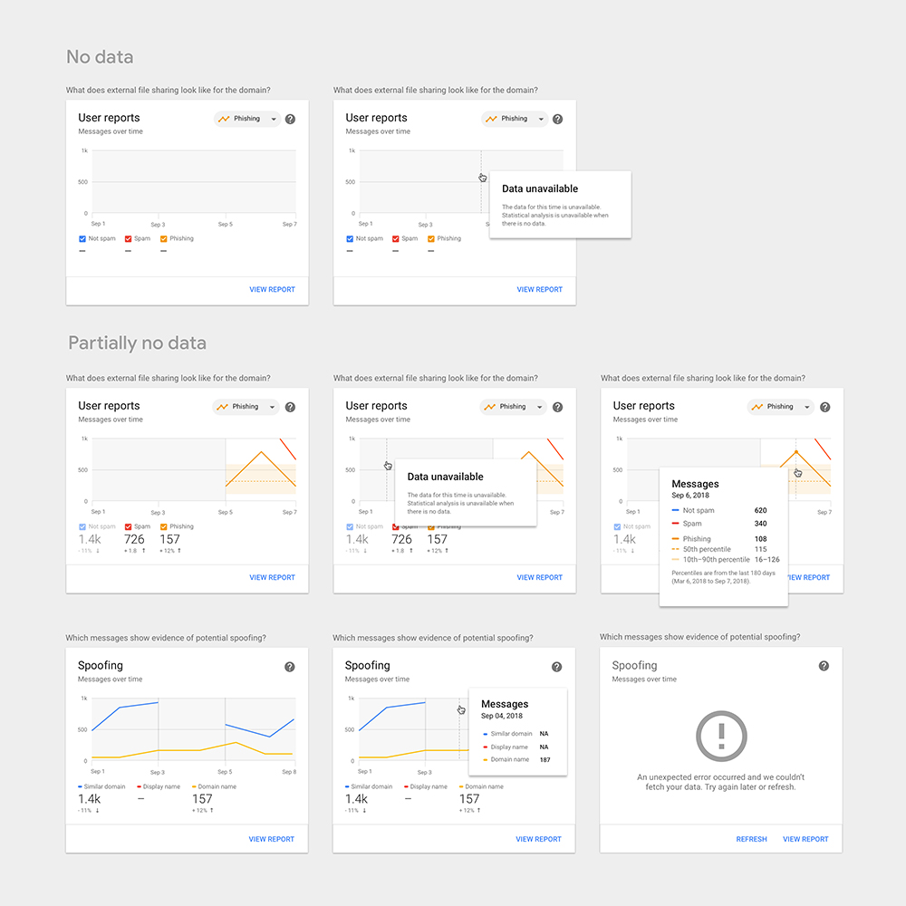
Specs, Guidelines, and Edge Cases
In order to move quickly we referenced what data visualization guidance was available internally and filled in the gaps on our own. We needed to think through things like shape and color to differentiate data attributes in charts.
We also had to consider cases where there was no data available during a certain period of time vs. when the data was available but the value was zero.
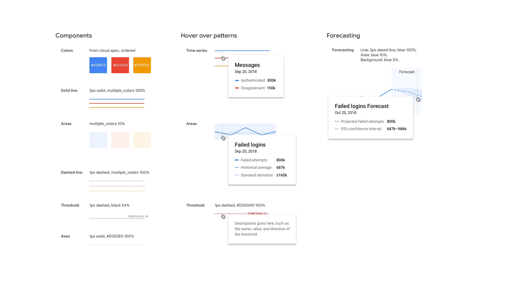
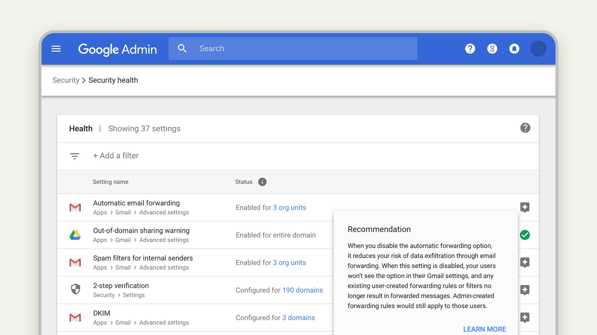
Secure settings configurations
One major way that organizations can keep their users and data more safe is to have the right mix of settings. The right mix is important so that you're allowing your organization to function as it needs to without risking security breaches and policy violations. In some cases the repercussions of security incidents can bankrupt a company, so getting this right is important.
Before Security Health was launched, admins had to navigate to the multitude of different settings pages buried throughout the Admin Console. After it was launched, admins could see all security-related settings in one place, see how they were configured, and get recommendations on how to make their settings more secure.
Research Insight
We hypothesized that admins would appreciate a gamified experience where we gave them a security score with a to-do list of improvements. We found this was seen as pejorative — users preferred a transparent view of their settings with light recommendations. Every organization has a different risk tolerance and different data policies.
Design Approach
Brought all security settings into a single list with their status and Google best-practice recommendations. We optimized for helping admins quickly see how their domain was configured. Our recommendations were secondary and neutral — no security scores, no red warnings, just transparent suggestions.
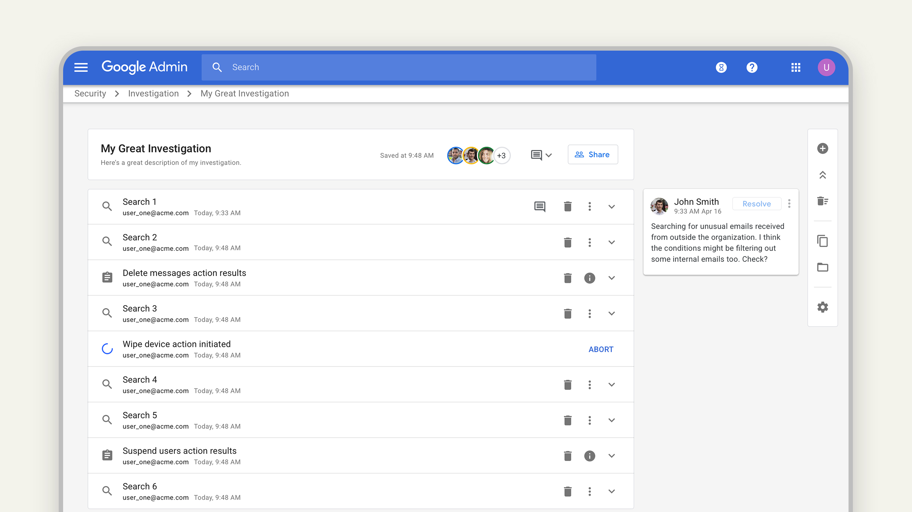
Search & take actions
The foundational idea of the investigation tool was largely conceived by a fellow UXer on the project, but it was my responsibility to execute on finalizing the design to get the MVP launched.
I was personally responsible for designing the final UI for the investigation tool including the query builder and the experience for saving investigation objects and making them shareable. I also designed the Drive permissions experience where users could see what files in their organization might be shared too broadly. This design pattern was quite tricky because we had to show many-to-many relationships in the data using a junction table. Once the user found a violation we allowed users to take actions like editing permissions.
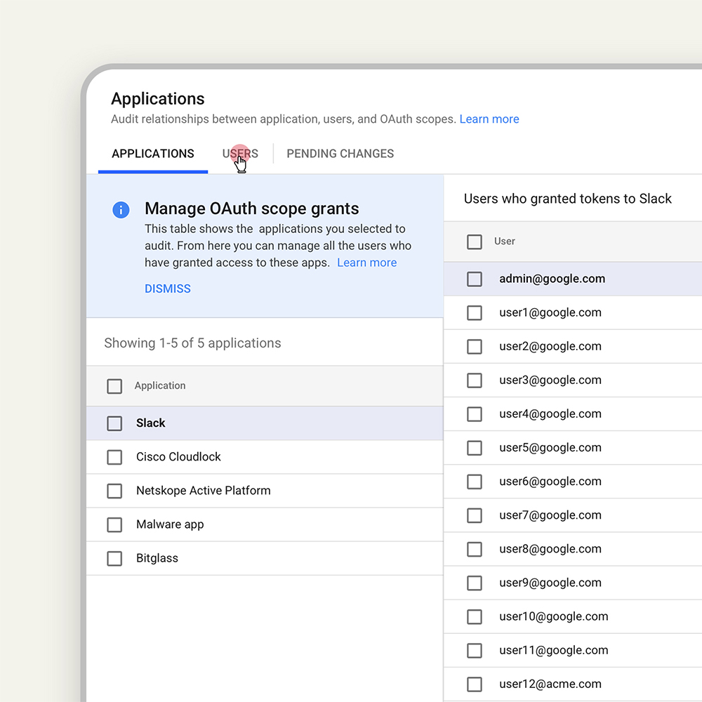
Research Insight
Security teams, especially at larger companies, work in teams. There's a separation of duties in order to ensure that not too many people have the ability to wipe out your entire organization's data with a single action.
Design Approach
Create a shareable security investigation object where certain people can run searches to answer specific questions, then others can take over the investigation to take action on what's been found. Permissions were critical — we created the ability for individuals or groups to have read or write data access to particular data types and particular tools.
Actions and pivoting
Many times admin investigations are quite organic. They get a prompt to answer one question and might come across an entire data set that's problematic. We created the ability to pivot organically from one set of query results to generate a completely new query — for example, pivoting from finding a phishing email to seeing all other emails from that same sender.
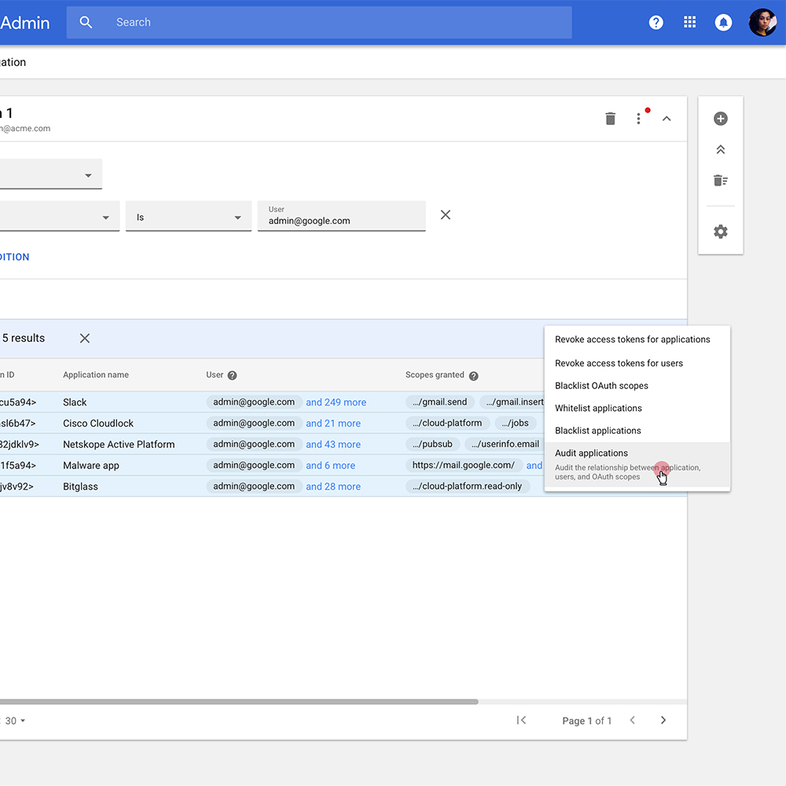
Accessibility design
I initiated a big accessibility push on our team where historically the UX team did not have a focus on it. We created a singular process that worked well for us and then used that process to create detailed accessibility specs for the suite.
The accessibility design on this project was especially difficult because of the complex componentry involved — charting widgets, data tables with complex interactions, and high-data density. We also created a taxonomy for VE log names that we delivered to engineering since Security Center was highly instrumented.
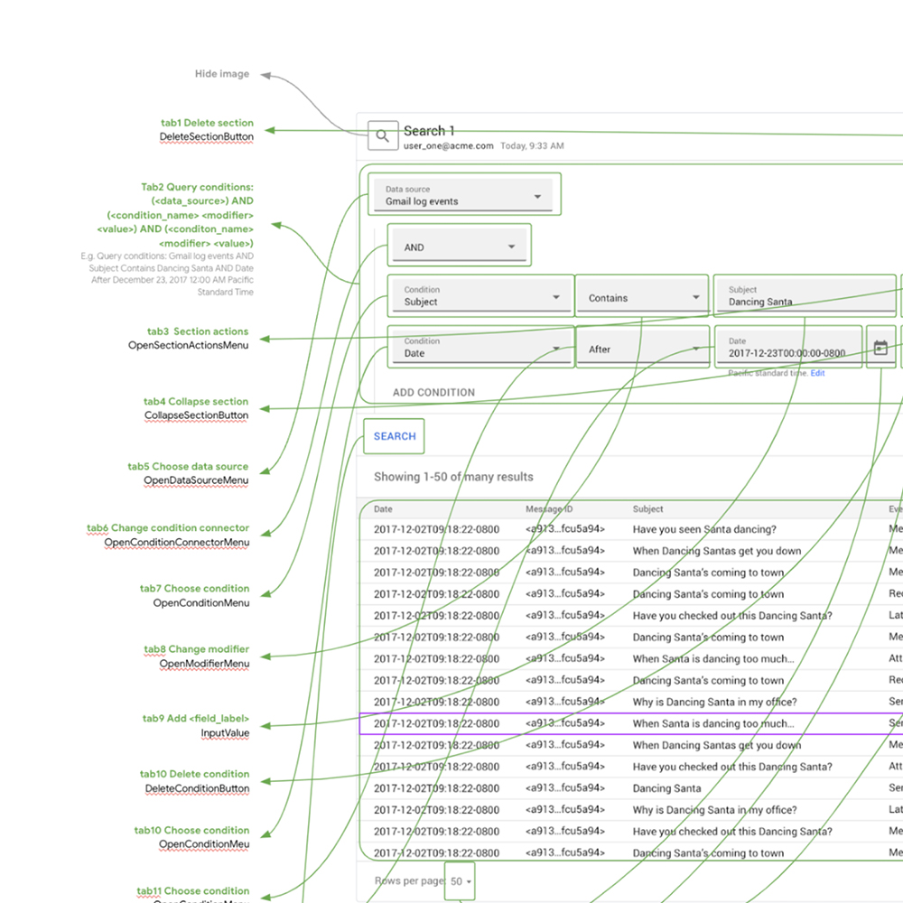